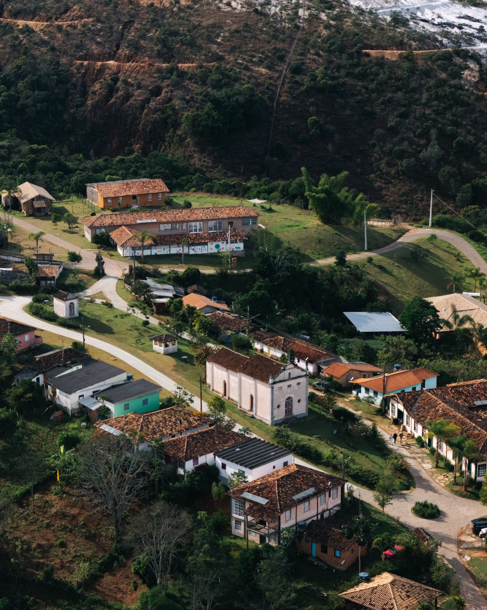
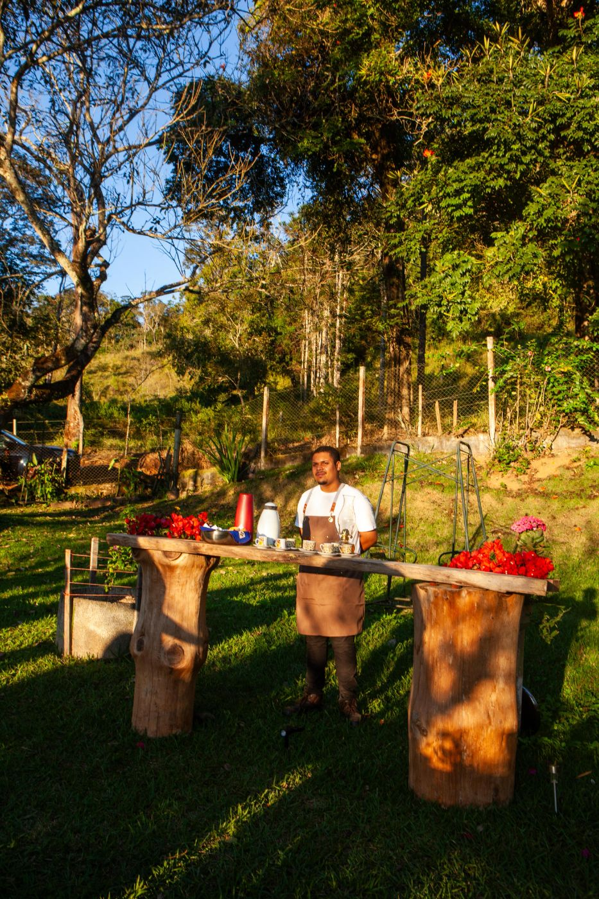
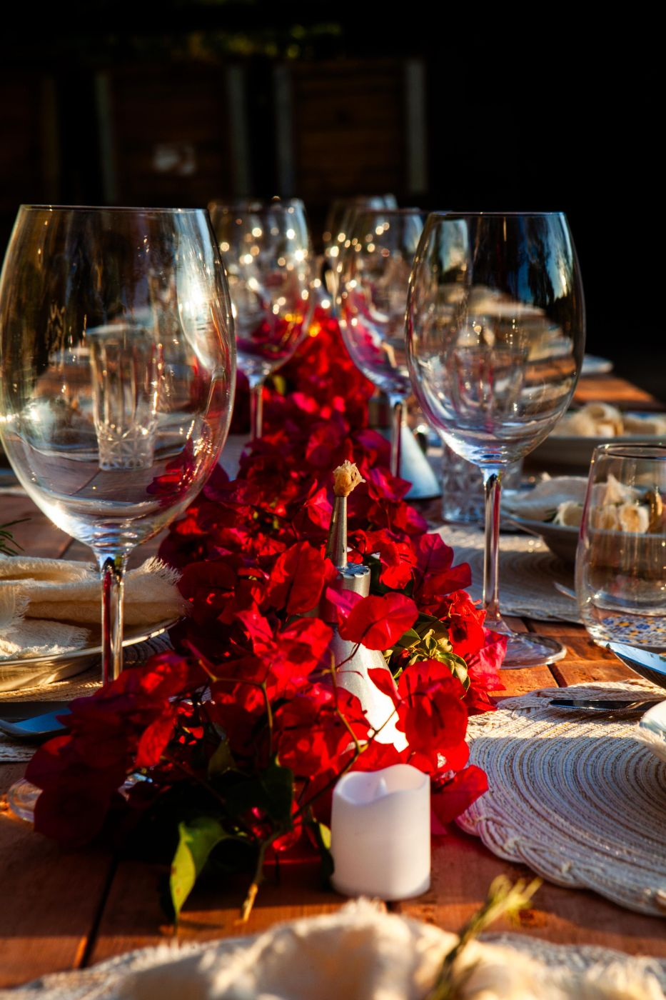
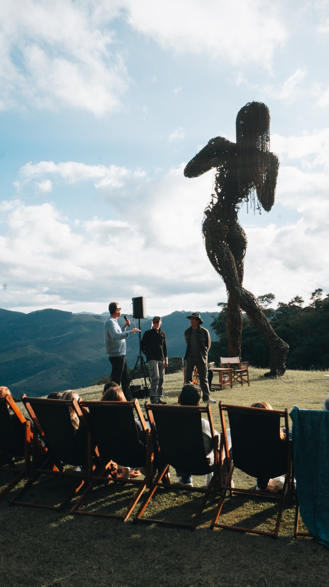
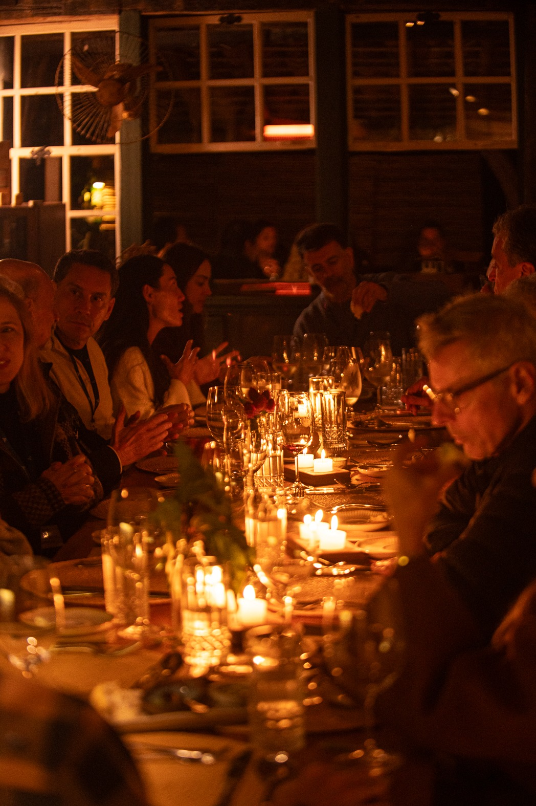
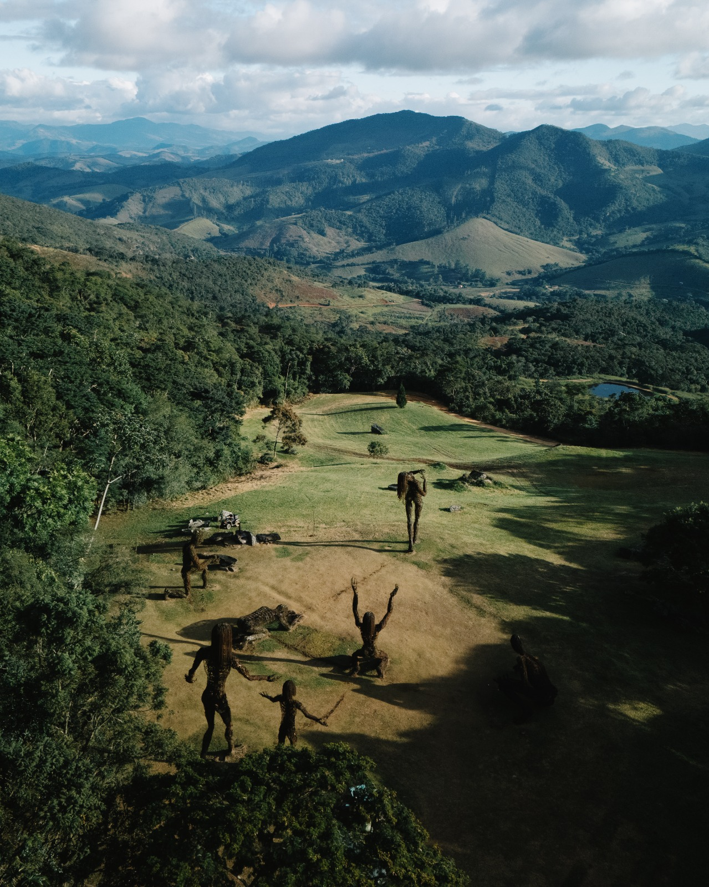
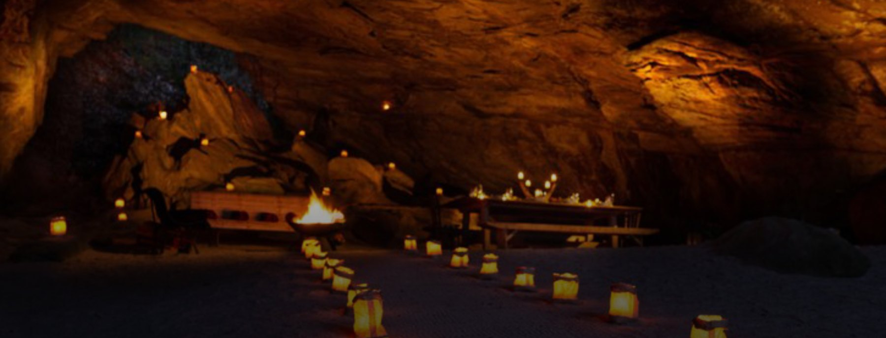
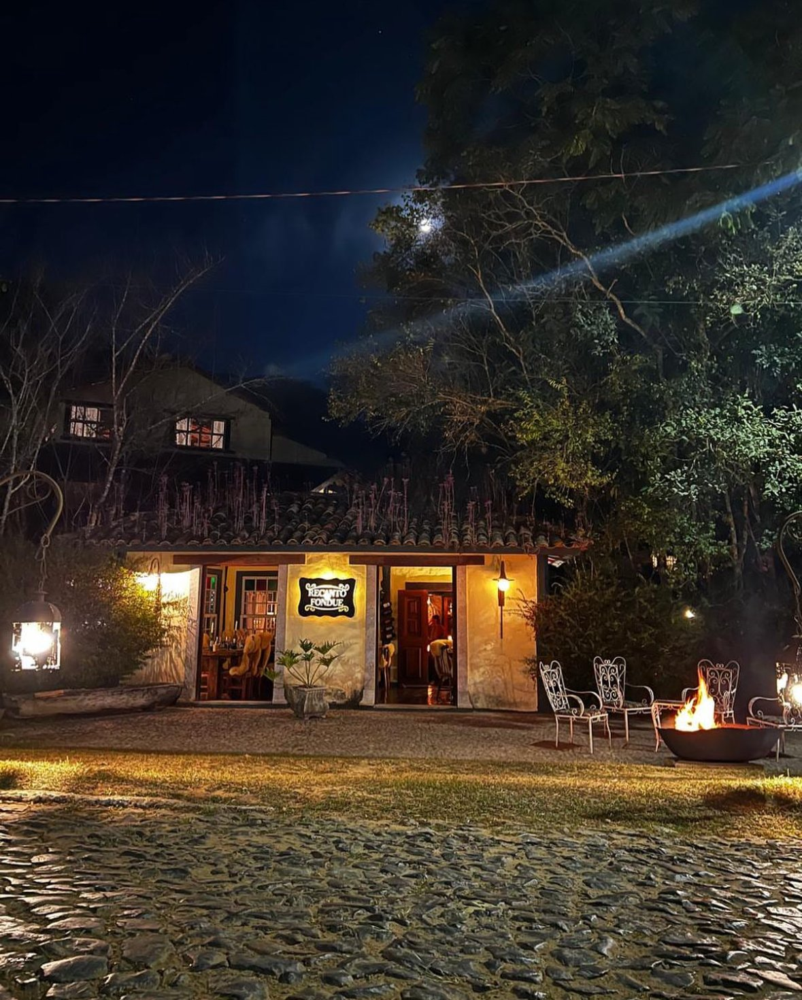

Algumas horas
Experiência Garcia de Paula
Comece pela origem.
Uma experiência intimista para conhecer nosso território, nossa história e nossos vinhos.
Conhecer a experiênciaO convite
A Garcia de Paula recebe pequenos grupos para experiências desenhadas com calma: algumas horas na vinícola, um dia inteiro entre a propriedade e Ibitipoca, ou uma viagem completa com hospedagem, mesa e paisagem.
Experiências
Algumas horas
Comece pela origem.
Uma experiência intimista para conhecer nosso território, nossa história e nossos vinhos.
Conhecer a experiência
Um dia inteiro
Garcia de Paula × Ibiti Village
Um dia na Serra. Uma experiência inteira.
Uma jornada que começa entre vinhedos e vinhos e segue pela Serra da Ibitipoca.
Descobrir o dia especial
Quero ficar mais
Faça da visita uma viagem.
Combine a experiência Garcia de Paula com hospedagem, gastronomia e outros momentos selecionados.
Explorar a regiãoAlgumas horas
A Garcia de Paula começa a abrir suas portas para encontros intimistas, pensados para pequenos grupos e para quem deseja conhecer com calma um pouco do nosso território, da nossa história e dos nossos vinhos.



Garcia de Paula × Ibiti Village
Uma experiência criada para quem deseja viver a Serra da Ibitipoca intensamente, mesmo tendo apenas um dia disponível.

Vinhedo, território, degustação harmonizada e Bar de Vinhos.
Mogol, Oca, natureza, arte e paisagem.

Um momento de contemplação e brinde.

A experiência termina com jantar no Yucca.

Alguns lugares são visitados. Outros ficam na memória.
Quero ficar mais
Podemos ajudar a combinar sua experiência na Garcia de Paula com hospedagem, gastronomia e outros momentos especiais na Serra da Ibitipoca.

Sexta a domingo · mínimo 8 pessoas
Uma imersão entre vinhos, paisagem, arte, música e gastronomia nos cenários mais especiais de Ibitipoca.
3 dias | 2 noites · mínimo 8 pessoas
Do vinhedo ao pôr do sol, da mesa à paisagem, uma experiência curada entre a Garcia de Paula e o Ibiti Village.

Casas e suítes na Vila do Mogol.

Em Rancharia, a 9 km da Vila de Conceição do Ibitipoca.

Mesas parceiras para fechar o roteiro.